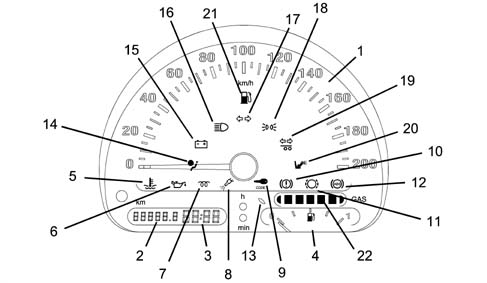
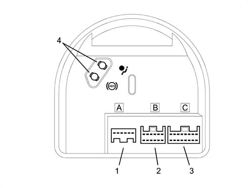
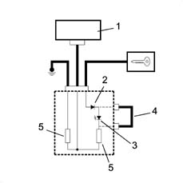
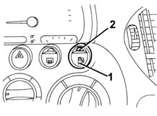
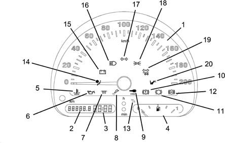

5560B analogue control panel
- Path
- Descriptions > 55 ELECTRICAL EQUIPMENT > 5560 INSTRUMENT PANEL > 5560B analogue control panel
- Kind
- system description
- Applies to
- engines: 1.6 16v; all production periods; only with equipment: BIPOWER and BLUPOWER
- Interactive page
- https://sloeber94.github.io/elrnDB-fMltpl/en/#/2888298
Applies to: engines: 1.6 16v; all production periods; only with equipment: BIPOWER
The gauges and warning lights which form the instrument panel are grouped in a single instrument containing:
- electronic speedometer
- total mileage counter/trip recorder
- digital clock
- fuel gauge, with reserve warning light
- warning lights

1, electronic speedometer 2, total mileage counter/trip recorder 3, digital clock 4, fuel gauge 5, engine overheating warning light 6, low oil pressure warning light 7, heater plugs warning light 8, fuel injection failure warning light 9, Code failure warning light 10, insufficient brake fluid level/handbrake warning light 11, brake pad wear warning light 12, ABS failure warning light 13, petrol reserve warning light 14, Air Bag fault warning light 15, recharging warning light 16, main beam headlamps warning light 17, direction indicators warning light 18, side lights warning light 19, trailer direction indicators warning light 20, passenger Air Bag deactivation warning light 21, petrol system warning light 22, methane gauge
Rear view
There are three connectors and the housings for the ABS-Air Bag warning light bridges at the rear

1, connector A 2, connector B 3, connector C 4, housing available for bridge for ABS/ Air Bag warning lights
Instrument pin-out
Connector A
Pin, Signal
1, direct supply
2, supply controlled by the ignition
3, power earth
4, electronic earth
5, left direction indicators warning light
6, right direction indicators warning light
Connector B
Pin, Signal
1, side lights warning light
2, main beam headlamps warning light
3, speedometer signal output (preparation)
4, fuel gauge signal
5, fuel gauge earth
6, Air Bag failure warning light
7, passenger Air Bag deactivation warning light
8, handbrake warning light
9, N.C.
10, petrol fuel system warning light
11, methane gauge
12, N.C.
Connector C
Pin, Signal
1, generator warning light
2, low oil pressure warning light
3, engine overheating warning light
4, N.C.
5, brake pad wear warning light
6, fuel injection failure warning light
7, ABS failure warning light
8, speedometer sensor supply
9, speedometer signal input
10, speedometer signal output
11, speedometer signal output
12, Code failure warning light
13, low brake fluid level warning light
14, EBD failure warning light
15, N.C.
16, trailer direction indicators warning light
Speedometer signal
The speedometer signal comes from the specific sensor located on the gearbox.
The gauge display is produced by an electronic circuit inside the module. There are also some "repeat" outputs of the signal for other systems which require this information.
Milometer
The milometer consists of an LCD which alternately shows the total and trip mileage.
The specific button switches between functions and resets the trip recorder:
- if the button is pressed briefly (less than about 2.5 s), it switches over between total/trip mileage
- if the button is pressed for longer (more than about 2.5 s) and the milometer is on trip recorder, the recorder is reset.
Resetting mileage
The total mileage counter can be reset only once - during the first 200 km - following handling during production or prior to delivery to the Customer.
In the case of a new instrument, the mileage reading is preceded by an "H" (e.g. "H00199").
After 200 km, the letter H disappears automatically and the reading becomes "000201".
If the reset button is pressed before 200 km, the letter H disappears and the counting restarts from "000000".
This operation can only be carried out once!
Clock
The digital clock is electronic with quartz oscillator. It is adjusted by means of a button inside the dial.
The time is adjusted using the "h" and "min" buttons.
The clock is set to zero if the battery is disconnected for over 10 seconds.
Lcd
The segments of the milometer and clock display can be tested as follows: turn the ignition on while holding down the reset button.
Petrol level
The fuel level is displayed via electronic circuitry inside the module, which operates the gauge and the warning light (which comes on when the gauge is at about 1/8 of its travel).
The internal logic "dampens" the signal, preventing fluctuations (e.g. the warning light comes on if the signal persists for at least 100 s).
During starting, when the ignition is turned on, the warning light comes on for about 4 seconds as a self-test, then goes out.
If it stays on flashing, and at the same time the gauge goes to "0", this means that there is a fault in the connection (short circuit to earth or A.C.) or in the fuel gauge sender unit.
Methane level
The methane level is displayed via electronic circuitry inside the actual module which operates 6 green indicator LEDs in proportion to the pressure detected in the methane circuit. A seventh, amber coloured LED indicates the "reserve" condition.
The internal logic "dampens" the signal, preventing fluctuations (e.g. the warning light changes when the signal persists for at least 250 s).).
Warning lights
"smart" warning lights
Some warning lights come on not only to indicate a fault in the system they are checking, but also if there is a failed connection or a short to earth from the circuit which connects the warning light and relevant control unit: these warning lights have a special internal control circuit which checks that they are connected correctly.
These warning lights are:
- "Air Bag failure"
- "ABS failure"
The relevant electrical circuit is shown in the following figure:

1, ABS or Air Bag control unit 2, protective diode 3, warning light LED 4, bridge 5, load resistors
Low brake fluid level and handbrake warning light
The "insufficient brake fluid level" and "handbrake" warning light has a dual function:
- if it comes on, during driving, together with the "ABS failure" warning light, it indicates a fault in the EBD braking system, managed by the ABS control unit (for further details refer to the description of the ABS)
- if, on the other hand, it comes on by itself, the brake fluid level is low or the handbrake is on.
Petrol system warning light
The engine normally runs on methane; if the methane runs out, the system automatically switches to running on petrol and the appropriate warning light comes on. Once the methane has been refilled, the system automatically switches back to running on methane.
The special switching button in the dashboard makes it possible to switch manually to running on petrol: in such a case both the green LED on the button and the special warning light in the instrument panel come on.
By pressing the button again, methane operation is restored.

1, Button for switching to petrol 2, LED signalling petrol operation
Lighting
The instrument is lit up when the ignition is on.
The brightness of the instrument is dimmed with the side lights signal
Replacing bulbs
The warning lights consist of LEDs built into the electronic circuit, and so CANNOT be replaced.
Applies to: engines: 1.6 16v; all production periods; only with equipment: BLUPOWER
The gauges and warning lights which form the instrument panel are grouped in a single instrument containing:
- electronic speedometer
- total mileage counter/trip recorder
- digital clock
- fuel gauge, with reserve warning light
- warning lights

1, electronic speedometer 2, total mileage counter/trip recorder 3, digital clock 4, methane gauge 5, engine overheating warning light 6, low oil pressure warning light 7, heater plugs warning light 8, fuel injection failure warning light 9, Code failure warning light 10, insufficient brake fluid level/handbrake warning light 11, brake pad wear warning light 12, ABS failure warning light 13, methane reserve warning light 14, Air Bag fault warning light 15, recharging warning light 16, main beam headlamps warning light 17, direction indicators warning light 18, side lights warning light 19, trailer direction indicators warning light 20, passenger Air Bag deactivation warning light
There are three connectors and the housings for the ABS-Air Bag warning light bridges at the rear
1, connector A 2, connector B 3, connector C 4, housing available for bridge for ABS/ Air Bag warning lights
Instrument pin-out
Connector A
Pin, Signal
1, direct supply
2, supply controlled by the ignition
3, power earth
4, electronic earth
5, left direction indicators warning light
6, right direction indicators warning light
Connector B
Pin, Signal
1, side lights warning light
2, main beam headlamps warning light
3, speedometer signal output (preparation)
4, N.C.
5, methane level signal earth
6, Air Bag failure warning light
7, passenger Air Bag deactivation warning light
8, handbrake warning light
9, N.C.
10, N.C.
11, methane gauge signal
12, N.C.
Connector C
Pin, Signal
1, generator warning light
2, low oil pressure warning light
3, engine overheating warning light
4, N.C.
5, brake pad wear warning light
6, fuel injection failure warning light
7, ABS failure warning light
8, speedometer sensor supply
9, speedometer signal input
10, speedometer signal output
11, speedometer signal output
12, Code failure warning light
13, low brake fluid level warning light
14, EBD failure warning light
15, N.C.
16, trailer direction indicators warning light
Speedometer signal
The speedometer signal comes from the specific sensor located on the gearbox.
The gauge display is produced by an electronic circuit inside the module. There are also some "repeat" outputs of the signal for other systems which require this information.
Milometer
The milometer consists of an LCD which alternately shows the total and trip mileage.
The specific button switches between functions and resets the trip recorder:
- if the button is pressed briefly (less than about 2.5 s), it switches over between total/trip mileage
- if the button is pressed for longer (more than about 2.5 s) and the milometer is on trip recorder, the recorder is reset.
Resetting mileage
The total mileage counter can be reset only once - during the first 200 km - following handling during production or prior to delivery to the Customer.
In the case of a new instrument, the mileage reading is preceded by an "H" (e.g. "H00199").
After 200 km, the letter H disappears automatically and the reading becomes "000201".
If the reset button is pressed before 200 km, the letter H disappears and the counting restarts from "000000".
This operation can only be carried out once!
Clock
The digital clock is electronic with quartz oscillator. It is adjusted by means of a button inside the dial.
The time is adjusted using the "h" and "min" buttons.
The clock is set to zero if the battery is disconnected for over 10 seconds.
Lcd
The segments of the milometer and clock display can be tested as follows: turn the ignition on while holding down the reset button.
Methane level
The fuel level is displayed via electronic circuitry inside the module, which operates the gauge and the warning light (which comes on when the gauge is at about 1/8 of its travel).
The internal logic "dampens" the signal, preventing fluctuations (e.g. the warning light comes on if the signal persists for at least 100 s).
During starting, when the ignition is turned on, the warning light comes on for about 4 seconds as a self-test, then goes out.
If it stays on flashing, and at the same time the gauge goes to "0", this means that there is a fault in the connection (short circuit to earth or A.C.) or in the fuel gauge sender unit.
Warning lights
"smart" warning lights
Some warning lights come on not only to indicate a fault in the system they are checking, but also if there is a failed connection or a short to earth from the circuit which connects the warning light and relevant control unit: these warning lights have a special internal control circuit which checks that they are connected correctly.
These warning lights are:
- "Air Bag failure"
- "ABS failure"
The relevant electrical circuit is shown in the following figure:
1, ABS or Air Bag control unit 2, protective diode 3, warning light LED 4, bridge 5, load resistors
Low brake fluid level and handbrake warning light
The "insufficient brake fluid level" and "handbrake" warning light has a dual function:
- if it comes on, during driving, together with the "ABS failure" warning light, it indicates a fault in the EBD braking system, managed by the ABS control unit (for further details refer to the description of the ABS)
- if, on the other hand, it comes on by itself, the brake fluid level is low or the handbrake is on.
Lighting
The instrument is lit up when the ignition is on.
The brightness of the instrument is dimmed with the side lights signal
Replacing bulbs
The warning lights consist of LEDs built into the electronic circuit, and so CANNOT be replaced.